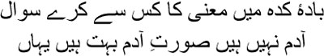
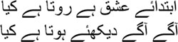
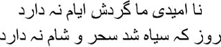

3

In this kingdom of puppets whom can I ask about the
mystery of the universe?
There are no men here, although there certainly are many
with the appearance of men
an you possibly hear me across this enormous distance, Manto bhai? Your obstinacy has forced me to speak again after all these years. It is true that I lived another twelve years after 1857, but I did not care to talk to anyone. But still I had to speak, for selling words was my livelihood. But other than what was absolutely necessary to earn a living, speech had become haraam to me, it was profane. I would only lie back, supine, in the ramshackle hall, the diwankhana. Kallu would arrive to deliver two meals a day, a little paratha and kebab or bhuna gosht, and my liquor. Just sleep, and more sleep. Not a single ghazal came to me. How could it, tell me, how could it? I was rotting away at the time, my body pervaded by an infernal odour, I could smell it even if no one else could, the stench of putrefaction. One evening, unable to bear this smell anymore, I visited the mahalsarai. Usually, wild horses could not drag me there. Umrao Begum busied herself all day with the namaz and the prayer beads—whether I was alive or dead made no difference to her. Just imagine, Manto bhai, two people living alongside each other for over fifty years, never conversing, never even getting to know one another. This is nikah, this is marriage, who needs mohabbat, who needs love? Don’t you go thinking I’m putting all the blame on Umrao Begum, I am nothing but a heathen myself. Like Mir sahib said in his sher, I did not know how to bring her closer; she never came to me, but that was not her fault.
At the mahalsarai I discovered Begum solemnly explaining something to Kallu’s mother and Madari’s wife. I paused outside, trying to eavesdrop. Begum was telling them, ‘Hazrat had many wives. But Nabi did not neglect any of them. He used to take turns with each. Only Suda had given up her share to Ayesha. Even though he didn’t live with five of his wives—Suda, Shafia, Zubira, Ommahabiba, and Maimuna—he made sure none of them was deprived. How many people are as impartial as Hazrat?’ When Begum paused, I cleared my throat and entered. Kallu’s mother and Madari’s wife veiled themselves at once and left. Approaching me, Umrao Begum said, ‘Take a seat, Mirza sahib.’
— Can everyone ever be treated equally, Begum? I asked her with a smile.
— Only by Nabi. But what brings you suddenly to the ladies’ quarters? You could have sent your orders through Kallu.
— Orders? Have I ever ordered you Begum?
— Then what brings you to my chambers?
Grasping her hand, I said, ‘Will you smell me, Begum?’
— Ya Allah! What are you saying, Mirza sahib?
Umrao Begum remained standing for a long time, her head bowed. Then I heard a voice like a coil of smoke. ‘All that was a long time ago. What’s the matter with you, Mirza sahib?’
— Do you get a bad smell, Begum?
— Bad smell?
— Now that I’m standing here in front of you, do I not reek of something?
— Why should you, Mirza sahib?
— Because I get a stench from my own body all the time. Of rotten flesh.
— Ya Allah! With a shriek she put her arms around me. Rubbing my back with both her hands, she said, ‘What’s the matter with you Mirza sahib? What’s wrong? Have you had too much to drink? Did you have a bad dream?’
I began to laugh. —Bad dream? I am a nightmare myself. Never in his life has Allah had as bad a dream as me.
— Mirza sahib …
— Yes.
— Ask Allah for blessings.
— I do that all the time Begum.
— What do you ask for?
— Hum hain mushtaq aur woh bazaar; Ya Illahi! yeh mazra kya hai? I am desirous, and she, disgusted. What sort of mess is this?
— Who is it? Who is disgusted with you?
— Khuda, I answered, leaning my head on her shoulder.
— Come, Mirza sahib, let me take you back to the diwankhana.
— Why?
We gazed at each other for aeons. I sensed that we would not be able to bridge the gap between ourselves. Almost certainly, so could Begum. Her cheeks were wet. Who could take all this at our age, Manto bhai? What use are tears? I don’t care for them anymore. Whenever I hear weeping I can see Karbala. The way Sakina had turned into an ocean of tears after Kasem’s death.
Begum took me back to the diwankhana that day. Helping me into bed, she sat for a long time by my side with her hand on my forehead. Several times she called, ‘Mirza sahib, Mirza sahib …’ I didn’t answer. What use would it have been? Everything had ended, our words wouldn’t reach each other anymore. With my eyes closed I muttered an old ghazal …
Where is the sorrow of parting, the joy of love. Where are
the nights, the days, the months and years?
Eventually Begum put out the lamp and left. I lay in the darkness, like I did every night, within my prison cell, and I felt very cold. Sometimes it feels as though there is no season in my life besides winter. As I was sinking into slumber I heard Kallu. ‘Huzoor … if you please … huzoor … Mirza sahib …’
Kallu never forgot the time, he always brought me my medicine at the appointed hour. He kept the key to the chest himself, and always gave me the right dose. He would never give me even a drop extra. As I drank, I listened to the stories that Kallu told. He liked nothing better than to tell stories. That evening I said, ‘Kallu, tonight let me tell you a story instead.’
— Very well, janab.
— Do you know how many worlds there are?
Kallu looked at me with widened eyes.
— There are two worlds. One in which Allah lives with Gibrail and the angels. And the other is ours, this earth, this world of land and water. The master of both these worlds asked one day, ‘Whom will the world belong to on the day of the qayamat, on judgment day?’ Who was it that answered? The master himself. Who else but he could have answered anyway? The master said, ‘Everything, everything is Allah’s.’ And, how funny, only Allah talks to Allah. Who can talk to him, after all? Allah is very lonely, Kallu.
— Ya Allah! Kallu wailed.
— What’s the matter?
— Allah …
— Forget about Allah. Listen to my story first. Those who sin in this world obviously have to be punished in Allah’s court. Even in Allah’s kingdom there are people who commit transgressions. Do you know what Allah does to them? He sends them to this world as punishment. I had sinned in Allah’s kingdom, Kallu.
— Janab …
— That’s why Allah sent me to this world. After thirteen years in prison, Kallu, I was given a life sentence. Do you know when? The day I was married to Begum. And then sent to Dilli. This is a frightening prison, Kallu. Who will ever unchain me? Who … who will? You’ll never understand, Kallu, what a punishment it is to have to keep writing all your life.
Kallu was an excellent storyteller, Manto bhai. He would run off to the Jama Masjid whenever he could, listening to the stories of the dastangos. These dastangos are strange people. They spent the entire day in the courtyard of the mosque, telling their stories—that was how they made their living. Bagfuls of stories that never ended, as though they had combed the world for these tales. They would tell their stories whether people could pay or not, it wasn’t for their livelihood alone. They would sink into their own dreams as they told their tales. Our era was nothing but a fabric woven with the thread of stories, Manto bhai. You couldn’t tell the skein of real life apart from the skein of stories. The British, the goras, took over Dilli after the sepoys rose in mutiny, those were terrible times, Manto bhai, all of Dilli seemed to have become a Karbala, and the dastangos were lost forever too. There was no room for stories anymore in the Englishman’s Dilli; as you know, the goras don’t want fiction, they want history. The emperor had ordered me to write a history—how tiresome it was. I have heard of the history of the British from one or two people; it seemed to me like suffocating inside a black hole.
Since you wrote stories, you will understand. How many people can really tell stories? How many have the actual ability to write? Anyone can write history. All it needs is memory. But to write a story you must have the power to dream. Isn’t that so? Could the story of Laila and Majnu have been born without a dream? If you have never dreamt, how will you accept the tale of Yusuf and Zuleikha? Is it a lie just because it’s a story? Stories like these have survived for centuries. And Sikandar? People only know his name, where is his kingdom today? History turns to dust, Manto bhai, stories live on.
After Dilli had turned to Karbala, I would often see Kallu weeping in a corner of the diwankhana. What is it, Kallu? His sobs would quicken, he would look like a hunted beast, at the mercy of death. What is it, Kallu?
Kallu would scream like a man dying. —Aren’t the dastangos coming back to Dilli, janab?
— I’m afraid not, Kallu.
— Why not, huzoor?
— The badshah has driven them away. How will they return?
Something strange happened one day. I was sitting in the veranda outside the house in the morning. Suddenly a man in a tattered robe, with bloodshot eyes and matted hair, appeared from nowhere. He came directly up to me and squatted at my feet.
— I haven’t eaten anything for days, Mian sahib.
— What can I do? I snarled like a street dog.
— If you could give me something to eat, huzoor …
— I barely get a square meal a day myself.
— Please give me some food, huzoor. I will tell you a dastan.
Kallu arrived suddenly. ‘Dastan?’ he asked, his eyes widening.
Exposing all his yellowed teeth, the man said, ‘Telling stories is my job.’
Sitting down by his side at once, Kallu said, ‘Tell us a story, then.’
— Give me something to eat first.
Kallu ran off into the house, and emerged a few minutes later with some kebab and scraps of paratha. Who knew where he had got hold of them? Wolfing down the food, the man smiled at us.
— Come on now. Kallu prodded him. —Whom is the story about, mian?
— Mirza Asadullah Khan Ghalib.
Kallu stared open-mouthed at me and then at the man.
— Do you know Mirza Asadullah Khan Ghalib, mian? I asked him.
— No, huzoor.
— Where did you hear the story then?
— In Agra.
— Do you live in Akbarabad?
— Yes, huzoor.
— But Mirza left Akbarabad for Dilli long ago, mian.
— I know, huzoor. We tell stories about Mirza in Agra. Lots of people gather around to listen.
— Tell us then, we’ll listen too. I smiled at Kallu, a mischievous smile played on his face too.
The man started with a masnavi on flying kites. I had written it when I was nine, Manto bhai. That was the time my pseudonym was Asad. You know, don’t you, that Nawab Husamud-Daulah had shown my ghazals to Mir sahib in Lucknow? Mir sahib had said, ‘If this boy finds a suitable teacher who points him in the right direction, he will grow up to be a peerless shair. Otherwise he will spout nonsense.’ That was what Mir sahib had said about me, just imagine.

Our love has just begun, and you’re weeping already?
Just wait and watch all that happens now
Ishq. Mir sahib was made to lose his mind because of love, he was passed off as a lunatic. Mir sahib was mad with love for somebody else’s begum, someone in his own family. He was tormented continuously for this, getting no respite even after fleeing Agra for Dilli. Eventually he did go insane, and as locked up in a tiny cell. His food used to be thrown to him. What agony Mir sahib was made to bear under the guise of medical treatment! He used to fall unconscious, bleeding through his nose and mouth. But even after all this Mir sahib bounced back. Unable to live in Dilli any longer, he went to Lucknow. That’s where he died in 1810. I was thirteen. And at that age of thirteen I was pinioned in Umrao Begum’s chains.
— Oh, but tell us the real story. Kallu shook the dastango by his shoulders.
— It was an enormous house. Kale Mahal. Khwaja Ghulam Husain Khan’s house. A huge gate, a vast terrace for birds within, packed with cages. Be it peacocks, be it deer, they were all there, hundreds of varieties of birds, apparently there was even a hoopoe in one of the cages.
I burst out in laughter. —Hoopoe. But this bird is mentioned in the Quran, Sulaiman had one. You saw the same hoopoe in Khwaja Ghulam Husain Khan’s residence, mian?
— I didn’t see it. But many people said they did.
— Very well, and then?
— Khwaja Ghulam Husain Khan’s daughter was married to Abdulla Beg Khan. He divided his time between Lucknow, Hyderabad and Alwar—he was in the king’s army, you see. He had no home of his own. Mirza Asadullah was born in Kale Mahal.
— Mirza was five, wasn’t he, when his father died on the battlefield?
— You know, huzoor?
— I have heard some of it. It’s Mirza Ghalib after all, stories about him swirl in the wind. And then?
— Mirza’s uncle was Nasrullah Beg Khan. He …
— Bakwas bandh karo, I cried. Stop your nonsense. —What is your real line of work? Tell me, what is it?
— I’m a storyteller.
— You call this a story? Who on earth wants to know of Nasrullah Beg? Go tell all this to the historians. What use is it to me? Get out, get out of here.
— Huzoor! Kallu and the man screamed in unison.
— I know what actually happened, I told the man, laughing.
— Yes, huzoor. He wrapped his arms around my legs.
— I know how Asadullah lived in Kale Mahal from the age of five till the time of his marriage.
— Tell us, huzoor. Now Kallu clutched my hand.
— Mirza wrote a ghazal much later. Listen, it’s about those days in Kale Mahal …

The flow of time is halted in the depth of my sorrow
When the day is black, how can morning and night be
different?
I don’t feel like talking anymore, Manto bhai. Let me lie here for some time. Later I will listen to what you have to say. Who knows how much longer I have been condemned to these dreams here inside my grave.